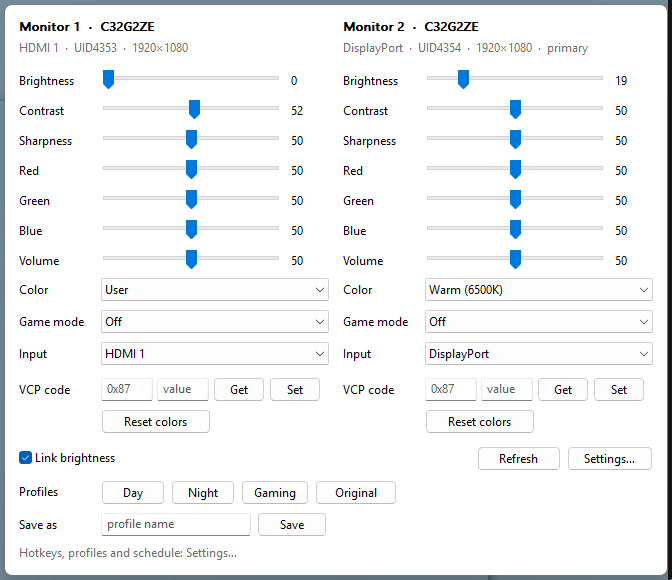

Monitor settings, right in your tray.
Brightness, contrast, colour, game modes and input for every connected monitor, without touching the buttons on the back.

What it does
Glint talks to your monitor over DDC/CI, the control channel built into almost every modern monitor, and only shows the settings yours supports.
Every slider
Brightness, contrast, sharpness, RGB gain and volume, per monitor.
Presets and inputs
Colour presets, game modes, and switching between HDMI and DisplayPort.
Profiles
Save your setup and restore it exactly, hidden RGB values included.
Linked brightness
One slider for all monitors, or just the one under your cursor.
Schedule
Switch to a day or night profile automatically at set times.
Raw access
Read or write any VCP code from the panel or the command line.
Hotkeys
All shortcuts can be changed in the config file.
- Ctrl Alt PgUp PgDnBrightness
- Ctrl Alt F1–F3Profiles
- Ctrl Alt MOpen panel
- Ctrl Alt F12Screens off
Command line
glintctl.exe does everything the panel does.
glintctl list
glintctl set all brightness 40
glintctl set 2 input hdmi1
glintctl apply NightSmall by design
Written in Rust on the plain Windows API. No Electron, no installer, no background services.
- 772 KBDownload size
- 2.4 MBMemory in use
- 0%CPU when idle
Open source
Glint is MIT licensed. Read the code, build it yourself, or open an issue if your monitor needs a setting that isn’t there.
Releases aren’t code-signed yet, so Windows may show a SmartScreen prompt the first time. Choose More info, then Run anyway.